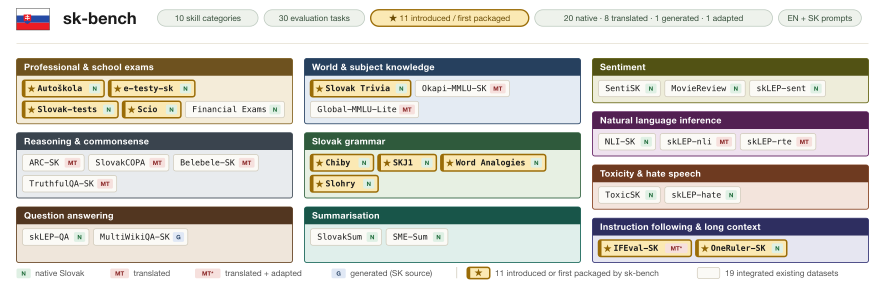

98 %
Testy pre ľudí
Gemini 3.1 Pro odpovedal správne na 98 % otázok z autoškoly, na 96 % otázok z finančnej skúšky NBS a na 95 % otázok z maturity zo slovenčiny.
Zistenie 1sk-bench: súbor testov na hodnotenie veľkých jazykových modelov v slovenčine
1Kempelenov inštitút inteligentných technológií, Bratislava2Univerzita Komenského v Bratislave3Technická univerzita v Košiciach4Cisco Systems5Vysoké učení technické v Brně
Korešpondenčný autor: marek@suppa.sk
Štúdiu sme predstavili na konferencii EMNLP 2026.
Zostavili sme prvý veľký súbor testov, ktorý meria, ako umelá inteligencia ovláda slovenčinu, a otestovali sme na ňom 55 modelov. Najlepšie z nich odpovedajú na otázky z autoškoly či maturity takmer bez chyby. Pri úlohách typických pre slovenčinu však ešte zaostávajú a modely s otvorenými váhami dosahujú výrazne horšie výsledky ako komerčné.
98 %
Gemini 3.1 Pro odpovedal správne na 98 % otázok z autoškoly, na 96 % otázok z finančnej skúšky NBS a na 95 % otázok z maturity zo slovenčiny.
Zistenie 13 zo 4
Modely majú určiť, či je slovenská veta napísaná bez chýb. Aj tie najlepšie odpovedajú správne len približne v troch prípadoch zo štyroch.
Zistenie 212,6
Najlepší komerčný model získal v celkovom hodnotení 72,6 bodu zo 100, najlepší model s otvorenými váhami 60,0 bodu.
Zistenie 3Vybrali sme šesť skutočných otázok z testov, na ktorých sme hodnotili modely. Sú len na ukážku, nie na porovnanie človeka s modelom. Kliknite na odpoveď, ktorú považujete za správnu.
Autoškola
Musí byť vozidlo stojace za zníženej viditeľnosti na parkovisku osvetlené?
Autoškola
Pri uzatvorenom chladiacom systéme chladiaca kvapalina vrie
Finančná skúška NBS
K nadobudnutiu vlastníckeho práva k nehnuteľnosti dochádza
Finančná skúška NBS
Blízkou osobou v priamom rade je
Maturita zo slovenčiny, 2024
Taliančina patrí do rovnakej jazykovej skupiny indoeurópskych jazykov ako
Maturita zo slovenčiny, 2024
V ktorej možnosti sa nachádza vokalizovaná predložka?
Toto sú tri hlavné zistenia zo štúdie. Pri každom uvádzame aj dáta, z ktorých vychádza.
1
V skratke
Na otázky z autoškoly, finančnej skúšky NBS a maturity odpovedajú najlepšie modely správne v 95 až 98 % prípadov.
Najlepšie modely, Gemini 3.1 Pro od Googlu a GPT-5.5 od OpenAI, odpovedali správne aspoň na 96 % otázok z autoškoly aj z finančnej skúšky NBS. Celé skúšky sme nesimulovali, takže tieto percentá nie sú body zo skúšky. Zisťovali sme, na koľko otázok z verejných databáz model odpovie správne. Tieto otázky sa navyše mohli objaviť v dátach, na ktorých sa modely učili.
701 otázok. Najlepší model s otvorenými váhami, Gemma 4 31B, dosiahol 87,9 %.
1 334 otázok. Najlepší model s otvorenými váhami, Qwen3.5 397B-A17B, dosiahol 87,8 %.
369 testových otázok. Najlepší model s otvorenými váhami, Gemma 4 31B, dosiahol 86,5 %.
Os grafu začína na 50 %. Každý model dostal každú úlohu v troch slovenských zneniach. Uvádzame priemer jeho výsledkov.
2
V skratke
Keď majú modely posúdiť pravopis a diakritiku slovenskej vety, aj ten najlepší odpovedá správne len v 75 % prípadov.
Keď modely zvládajú testy pre ľudí takmer bez chyby, tieto testy už neodlíšia dobrý model od výborného. Preto sk-bench obsahuje aj úlohy, v ktorých AI stále zaostáva. V úlohe Chiby majú modely určiť, či je slovenská veta napísaná bez pravopisných chýb a so správnou diakritikou. Pri otázkach o Slovensku je zasa veľký rozdiel medzi komerčnými modelmi a modelmi s otvorenými váhami.
3 432 viet, pri každej má model určiť, či je bez chýb. Najlepší model s otvorenými váhami, Qwen3.5 397B-A17B, dosiahol 72,2 %. Spomedzi všetkých modelov bol najlepší Gemini 3.1 Flash-Lite s výsledkom 75,0 %.
353 otázok o kultúre, zemepise a reáliách. Najlepší model s otvorenými váhami, Qwen3.5 397B-A17B, dosiahol 68,7 %.
Os grafu začína na 50 %. Každý model dostal každú úlohu v troch slovenských zneniach. Uvádzame priemer jeho výsledkov.
3
V skratke
Najlepší model s otvorenými váhami, gpt-oss 120B, získal 60,0 bodu zo 100. Najlepší komerčný model, Gemini 3.1 Pro, získal 72,6 bodu.
Komerčné modely, ako Gemini alebo GPT, bežia len na serveroch svojich výrobcov. Model s otvorenými váhami si firma, nemocnica či úrad môže stiahnuť a spustiť na vlastnom serveri. Váhy sú čísla, v ktorých je uložené všetko, čo sa model naučil. Takýto model však nemusí byť open source v plnom zmysle slova, pretože tréningové dáta ani kód na tréning často zverejnené nie sú.
Všetky špičkové modely s otvorenými váhami pochádzajú zo zahraničia. Kto chce AI prevádzkovať na vlastnom hardvéri, napríklad aby údaje neopustili organizáciu, dnes pri slovenčine dosiahne citeľne horšie výsledky. Podmienky použitia týchto modelov sa líšia, preto ich treba overiť pri každom modeli zvlášť.
Rebríček obsahuje všetkých 55 modelov zo štúdie v čase jej vydania. Skóre je zo 100 bodov. Skóre skupiny je priemer výsledkov jej úloh so slovenskými zadaniami. Kliknutím na názov stĺpca zmeníte poradie. Ak chcete vidieť jednotlivé testy, prepnite zobrazenie na všetkých 33 úloh.
| 1Gemini 3.1 Pro, komerčný model | 72,6 | 92,4 | 71,3 | 82,6 | 14,8 | 87,2 | 87,6 | 97,0 | 91,5 | 94,0 | 94,4 | 82,0 | 96,3 | 98,3 | 91,5 | 84,3 | 94,3 | 95,8 | 74,4 | 31,8 | 88,7 | 73,7 | 89,6 | 37,5 | 100,0 | 49,9 | 82,5 | 85,2 | 85,8 | 62,2 | 77,3 | 97,8 | 95,7 | 83,6 | 73,8 | 13,9 | 15,7 | 87,2 | 76,8 | 98,5 |
|---|---|---|---|---|---|---|---|---|---|---|---|---|---|---|---|---|---|---|---|---|---|---|---|---|---|---|---|---|---|---|---|---|---|---|---|---|---|---|---|---|
| 2GPT-5.5, komerčný model | 71,0 | 89,2 | 67,3 | 81,6 | 15,5 | 86,4 | 86,1 | 96,5 | 91,2 | 92,9 | 84,8 | 81,1 | 96,0 | 96,1 | 77,8 | 83,3 | 92,4 | 95,0 | 74,5 | 18,3 | 87,9 | 67,6 | 88,8 | 35,6 | 99,9 | 38,2 | 79,7 | 81,3 | 83,7 | 61,3 | 76,0 | 98,3 | 95,2 | 85,1 | 74,0 | 14,1 | 16,9 | 86,4 | 74,1 | 98,0 |
| 3Claude Opus 4.6, komerčný model | 68,1 | 87,2 | 58,6 | 83,4 | 15,4 | 80,6 | 83,6 | 94,8 | 88,2 | 91,5 | 91,4 | 74,3 | 93,2 | 91,6 | 90,8 | 80,3 | 76,2 | 94,8 | 73,2 | 16,8 | 79,0 | 33,9 | 83,9 | 14,8 | 99,8 | 31,2 | 83,2 | 85,3 | 80,9 | 59,9 | 79,7 | 97,4 | 94,8 | 90,3 | 78,8 | 14,6 | 16,1 | 80,6 | 71,4 | 95,7 |
| 4Gemini 3.1 Flash-Lite, komerčný model | 66,7 | 85,7 | 54,8 | 82,2 | 14,0 | 82,7 | 80,8 | 94,8 | 84,2 | 89,9 | 81,2 | 71,1 | 89,7 | 91,5 | 90,7 | 84,7 | 79,7 | 93,9 | 75,0 | 11,1 | 80,1 | 17,8 | 85,5 | 9,9 | 99,8 | 20,4 | 81,2 | 81,7 | 82,8 | 61,3 | 78,5 | 97,4 | 94,1 | 85,9 | 76,5 | 13,5 | 14,5 | 82,7 | 67,9 | 93,7 |
| 5Claude Sonnet 4.6, komerčný model | 64,9 | 84,7 | 54,0 | 81,6 | 15,3 | 78,0 | 75,8 | 94,0 | 85,3 | 89,6 | 80,6 | 73,2 | 89,6 | 88,5 | 90,9 | 82,0 | 73,4 | 93,3 | 68,8 | 14,7 | 59,9 | 32,6 | 81,9 | 12,3 | 100,0 | 22,3 | 80,6 | 83,0 | 80,1 | 60,3 | 81,3 | 95,4 | 91,2 | 85,1 | 77,7 | 14,4 | 16,1 | 78,0 | 63,1 | 88,5 |
| 6GPT-5.4 mini, komerčný model | 63,9 | 78,2 | 58,0 | 79,0 | 15,2 | 80,1 | 73,0 | 91,3 | 74,7 | 82,2 | 70,6 | 64,0 | 84,3 | 87,0 | 90,6 | 78,0 | 59,3 | 92,0 | 71,0 | 19,3 | 72,5 | 32,4 | 80,4 | 17,9 | 99,9 | 37,0 | 68,2 | 67,5 | 81,4 | 58,8 | 82,5 | 96,7 | 91,5 | 86,4 | 77,7 | 13,9 | 16,5 | 80,1 | 60,4 | 85,5 |
| 7gpt-oss 120B, model s otvorenými váhami | 60,0 | 73,7 | 53,2 | 79,0 | 13,5 | 74,9 | 65,3 | 90,6 | 77,9 | 81,0 | 65,9 | 71,6 | 74,4 | 76,0 | 83,9 | 64,7 | 51,4 | 92,2 | 65,0 | 14,6 | 71,0 | 27,9 | 71,7 | 17,5 | 90,9 | 28,4 | 72,8 | 75,8 | 83,2 | 57,8 | 75,6 | 96,4 | 89,8 | 84,8 | 75,3 | 12,9 | 14,2 | 74,9 | 50,5 | 80,2 |
| 8GLM-5.1, model s otvorenými váhami | 57,6 | 80,6 | 61,2 | 82,6 | 14,2 | 35,9 | 70,8 | 92,3 | 78,7 | 86,2 | 77,3 | 68,6 | 84,8 | 87,7 | 89,8 | 76,3 | 63,9 | 94,0 | 66,5 | 28,0 | 74,3 | 40,8 | 78,7 | 22,0 | 99,3 | 46,7 | 76,9 | 78,1 | 85,0 | 61,9 | 85,9 | 96,6 | 92,5 | 87,9 | 78,6 | 13,5 | 15,0 | 35,9 | 59,7 | 82,0 |
| 9Qwen3.5 397B-A17B, model s otvorenými váhami | 57,4 | 83,4 | 55,5 | 80,6 | 14,6 | 37,8 | 72,3 | 94,9 | 82,8 | 90,1 | 80,8 | 73,6 | 87,8 | 86,3 | 90,1 | 79,0 | 68,7 | 94,6 | 72,2 | 9,9 | 78,0 | 33,9 | 80,5 | 19,9 | 83,4 | 27,2 | 78,6 | 77,2 | 82,5 | 61,7 | 81,3 | 96,3 | 94,0 | 78,2 | 75,2 | 13,5 | 15,8 | 37,8 | 61,7 | 82,8 |
| 10MiniMax M2.7, model s otvorenými váhami | 57,1 | 78,0 | 51,5 | 78,4 | 13,5 | 44,7 | 76,6 | 93,6 | 82,9 | 86,9 | 73,1 | 71,7 | 81,6 | 83,5 | 83,1 | 63,3 | 59,9 | 93,0 | 59,5 | 21,4 | 73,1 | 42,4 | 76,0 | 22,8 | 34,7 | 40,6 | 72,6 | 75,4 | 81,7 | 57,2 | 71,7 | 96,8 | 92,4 | 83,5 | 74,4 | 13,0 | 14,1 | 44,7 | 63,0 | 90,2 |
| 11Kimi K2.6, model s otvorenými váhami | 55,7 | 80,6 | 52,7 | 78,0 | 14,7 | 31,8 | 76,2 | 93,1 | 78,7 | 84,8 | 78,6 | 64,7 | 87,0 | 85,7 | 90,2 | 81,0 | 62,4 | 94,0 | 65,2 | 23,4 | 73,4 | 38,1 | 77,6 | 18,3 | 45,4 | 39,2 | 60,2 | 57,3 | 84,1 | 60,8 | 82,8 | 97,0 | 93,1 | 88,6 | 77,9 | 13,8 | 15,7 | 31,8 | 62,6 | 89,8 |
| 12Qwen3.5 27B, model s otvorenými váhami | 55,3 | 81,2 | 55,7 | 79,5 | 14,9 | 36,1 | 64,6 | 94,5 | 80,0 | 84,9 | 76,8 | 69,1 | 83,2 | 87,8 | 90,5 | 82,7 | 62,1 | 93,7 | 69,0 | 16,6 | 73,6 | 27,8 | 77,4 | 18,2 | 83,3 | 41,3 | 70,1 | 68,3 | 79,9 | 61,3 | 80,0 | 97,3 | 93,6 | 86,5 | 78,9 | 13,7 | 16,2 | 36,1 | 54,7 | 74,5 |
| 13Gemma 4 31B, model s otvorenými váhami | 54,3 | 78,8 | 53,1 | 82,4 | 14,4 | 30,2 | 66,7 | 94,7 | 79,6 | 86,9 | 78,7 | 63,4 | 84,5 | 87,9 | 85,9 | 66,3 | 59,7 | 94,1 | 66,9 | 13,1 | 70,7 | 27,9 | 77,7 | 14,8 | 83,3 | 29,6 | 81,2 | 82,6 | 84,5 | 60,3 | 75,9 | 97,1 | 93,3 | 88,3 | 78,1 | 13,8 | 15,0 | 30,2 | 54,0 | 79,4 |
| 14Qwen3.6 27B, model s otvorenými váhami | 54,2 | 79,8 | 59,7 | 70,7 | 14,9 | 35,0 | 65,0 | 93,7 | 79,6 | 83,3 | 77,8 | 69,3 | 83,6 | 86,9 | 88,5 | 76,7 | 58,1 | 94,0 | 67,4 | 34,4 | 71,9 | 39,7 | 76,1 | 21,6 | 83,3 | 48,8 | 29,6 | 27,9 | 85,9 | 62,5 | 83,5 | 97,1 | 93,6 | 81,2 | 75,1 | 13,7 | 16,2 | 35,0 | 54,6 | 75,4 |
| 15gpt-oss 20B, model s otvorenými váhami | 54,1 | 67,4 | 47,6 | 76,9 | 13,0 | 62,4 | 57,2 | 88,1 | 72,6 | 74,8 | 58,7 | 67,1 | 65,5 | 72,8 | 83,3 | 56,7 | 34,4 | 89,6 | 62,6 | 14,8 | 61,5 | 15,6 | 65,0 | 9,4 | 85,1 | 24,6 | 71,0 | 72,1 | 80,7 | 56,1 | 72,5 | 96,1 | 87,3 | 82,1 | 73,9 | 12,5 | 13,5 | 62,4 | 42,5 | 71,9 |
| 16Llama 3.3 70B, model s otvorenými váhami | 53,1 | 72,1 | 53,9 | 79,4 | 21,4 | 35,4 | 56,4 | 87,5 | 72,3 | 80,6 | 66,0 | 59,7 | 76,2 | 83,8 | 87,3 | 57,0 | 50,2 | 91,6 | 62,2 | 29,1 | 63,6 | 33,3 | 69,4 | 16,2 | 81,2 | 38,1 | 68,2 | 72,3 | 81,2 | 57,6 | 82,0 | 96,9 | 92,7 | 85,1 | 79,0 | 16,1 | 26,6 | 35,4 | 47,2 | 65,6 |
| 17Qwen3.6 35B-A3B, model s otvorenými váhami | 52,2 | 77,2 | 55,4 | 71,8 | 14,5 | 32,8 | 61,4 | 92,3 | 76,3 | 81,5 | 76,0 | 65,8 | 80,7 | 83,5 | 85,5 | 76,3 | 53,7 | 92,5 | 69,8 | 23,7 | 69,7 | 31,0 | 75,6 | 14,4 | 83,4 | 38,9 | 40,2 | 36,1 | 85,5 | 55,6 | 77,8 | 97,3 | 93,0 | 84,6 | 76,4 | 13,6 | 15,3 | 32,8 | 51,2 | 71,6 |
| 18Qwen3.5 9B, model s otvorenými váhami | 47,9 | 69,7 | 50,4 | 77,0 | 15,0 | 31,1 | 44,4 | 88,7 | 67,6 | 72,2 | 64,8 | 61,3 | 73,9 | 78,3 | 81,0 | 61,0 | 47,9 | 89,3 | 61,6 | 18,4 | 62,0 | 20,2 | 65,8 | 12,9 | 83,2 | 39,8 | 65,9 | 68,3 | 83,5 | 60,1 | 82,5 | 95,4 | 90,9 | 69,1 | 77,1 | 13,6 | 16,3 | 31,1 | 42,1 | 46,7 |
| 19Qwen3 14B, model s otvorenými váhami | 47,4 | 67,1 | 49,1 | 74,3 | 16,2 | 34,1 | 44,0 | 85,7 | 65,5 | 65,1 | 63,1 | 59,4 | 70,9 | 79,6 | 76,5 | 59,7 | 45,2 | 88,7 | 63,4 | 23,3 | 58,9 | 16,0 | 62,5 | 10,1 | 85,1 | 33,5 | 50,0 | 54,6 | 83,4 | 58,1 | 76,6 | 94,3 | 90,0 | 84,3 | 77,4 | 14,2 | 18,2 | 34,1 | 41,4 | 46,5 |
| 20Granite 4.0-H Small, model s otvorenými váhami | 47,0 | 67,3 | 42,4 | 71,9 | 16,4 | 33,9 | 50,0 | 84,2 | 65,6 | 73,8 | 63,4 | 56,5 | 69,3 | 74,3 | 83,5 | 54,3 | 47,7 | 86,1 | 53,5 | 15,0 | 57,2 | 13,8 | 66,3 | 8,1 | 56,9 | 24,9 | 46,7 | 48,8 | 82,7 | 55,1 | 76,4 | 95,7 | 89,1 | 79,7 | 72,8 | 14,7 | 18,1 | 33,9 | 44,2 | 55,9 |
| 21Bielik 11B, model s otvorenými váhami | 46,3 | 66,5 | 47,1 | 74,6 | 12,6 | 30,4 | 46,9 | 83,7 | 61,3 | 68,4 | 66,7 | 53,5 | 73,5 | 75,4 | 85,9 | 45,3 | 51,7 | 89,9 | 59,3 | 7,0 | 55,7 | 25,4 | 66,2 | 16,4 | 86,7 | 17,3 | 66,2 | 68,2 | 80,4 | 50,8 | 72,3 | 81,0 | 86,2 | 90,4 | 76,3 | 12,9 | 12,3 | 30,4 | 41,9 | 51,8 |
| 22EuroLLM 22B, model s otvorenými váhami | 45,2 | 63,9 | 41,6 | 75,0 | 15,2 | 26,4 | 49,2 | 80,6 | 59,2 | 68,0 | 58,2 | 48,4 | 69,2 | 76,9 | 77,5 | 47,3 | 53,4 | 83,4 | 53,9 | 12,2 | 56,3 | 16,0 | 66,5 | 9,9 | 54,0 | 22,0 | 54,4 | 50,9 | 78,8 | 61,4 | 85,8 | 94,6 | 88,6 | 86,2 | 74,3 | 14,2 | 16,2 | 26,4 | 44,9 | 53,6 |
| 23Mistral Large 3 675B, model s otvorenými váhami | 45,0 | 77,3 | 49,3 | 65,3 | 11,8 | 20,9 | 45,3 | 90,8 | 77,0 | 83,7 | 72,7 | 65,4 | 82,2 | 83,9 | 89,6 | 64,3 | 63,2 | 93,0 | 61,8 | 16,7 | 62,0 | 24,8 | 76,8 | 11,1 | 73,2 | 24,1 | 71,9 | 68,7 | 83,0 | 28,8 | 35,8 | 85,3 | 47,4 | 88,2 | 78,2 | 11,2 | 12,3 | 20,9 | 58,0 | 32,6 |
| 24Apertus 70B, model s otvorenými váhami | 44,4 | 57,5 | 43,3 | 69,7 | 13,2 | 27,9 | 54,8 | 71,3 | 53,5 | 62,8 | 43,2 | 45,8 | 67,8 | 67,1 | 73,0 | 43,0 | 47,6 | 78,8 | 50,7 | 19,2 | 45,7 | 17,2 | 60,2 | 12,5 | 80,5 | 24,8 | 47,2 | 42,6 | 70,4 | 54,8 | 74,8 | 95,9 | 89,2 | 79,6 | 72,9 | 13,2 | 13,2 | 27,9 | 48,7 | 60,8 |
| 25Qwen3-SK 14B (Alpaca), model s otvorenými váhami | 43,8 | 70,0 | 45,6 | 60,2 | 15,0 | 41,0 | 30,9 | 86,7 | 66,2 | 68,9 | 70,7 | 59,3 | 71,0 | 81,9 | 80,5 | 65,0 | 50,1 | 89,7 | 63,5 | 10,7 | 58,7 | 18,4 | 67,6 | 9,9 | 83,9 | 7,6 | 68,0 | 67,4 | 82,8 | 32,6 | 51,0 | 15,3 | 59,0 | 87,3 | 78,0 | 14,5 | 15,5 | 41,0 | 29,3 | 32,5 |
| 26EuroLLM 9B, model s otvorenými váhami | 42,7 | 55,8 | 42,7 | 74,6 | 14,9 | 22,7 | 45,2 | 75,7 | 54,5 | 62,5 | 40,2 | 45,4 | 63,2 | 69,1 | 70,9 | 30,3 | 46,1 | 82,5 | 58,4 | 19,8 | 45,7 | 16,7 | 63,0 | 8,1 | 63,1 | 27,3 | 57,7 | 57,0 | 78,3 | 68,4 | 88,8 | 87,1 | 81,6 | 81,7 | 70,6 | 13,9 | 16,0 | 22,7 | 40,4 | 50,0 |
| 27Aya Expanse 32B, model s otvorenými váhami | 42,4 | 61,5 | 41,9 | 76,9 | 14,2 | 24,2 | 35,7 | 78,0 | 59,4 | 63,9 | 55,3 | 48,2 | 68,9 | 71,0 | 81,1 | 43,3 | 45,7 | 88,7 | 57,8 | 17,8 | 43,9 | 13,3 | 63,3 | 4,9 | 65,4 | 22,3 | 67,6 | 69,5 | 75,1 | 57,6 | 77,5 | 94,7 | 91,0 | 87,6 | 71,8 | 13,7 | 14,7 | 24,2 | 32,8 | 38,7 |
| 28Ministral 3 8B, model s otvorenými váhami | 40,8 | 60,4 | 39,2 | 70,6 | 13,5 | 24,0 | 37,1 | 78,6 | 59,7 | 64,9 | 45,4 | 53,4 | 68,7 | 71,5 | 67,3 | 47,0 | 47,0 | 85,2 | 54,2 | 9,8 | 50,2 | 12,7 | 61,2 | 6,2 | 58,0 | 15,4 | 54,7 | 50,0 | 74,7 | 51,6 | 72,4 | 96,2 | 89,5 | 81,5 | 65,0 | 13,1 | 14,0 | 24,0 | 32,3 | 41,9 |
| 29Ministral 3 8B (R), model s otvorenými váhami | 39,9 | 54,9 | 37,8 | 61,9 | 13,1 | 39,9 | 32,1 | 70,6 | 52,8 | 57,9 | 45,2 | 43,7 | 59,8 | 63,8 | 51,1 | 67,0 | 36,5 | 78,7 | 38,5 | 10,8 | 46,1 | 13,1 | 54,5 | 5,6 | 74,1 | 19,2 | 46,8 | 46,0 | 65,4 | 47,4 | 67,4 | 87,8 | 77,9 | 46,9 | 71,7 | 12,9 | 13,2 | 39,9 | 28,0 | 36,2 |
| 30Ministral 3 14B, model s otvorenými váhami | 37,2 | 63,8 | 34,6 | 55,9 | 14,2 | 18,4 | 36,5 | 82,3 | 62,5 | 66,2 | 51,0 | 51,0 | 72,9 | 73,0 | 68,7 | 61,7 | 48,9 | 87,3 | 58,4 | 5,7 | 57,9 | 13,1 | 63,5 | 4,8 | 4,2 | 16,3 | 58,3 | 56,8 | 77,6 | 23,8 | 40,7 | 49,6 | 46,3 | 78,6 | 71,7 | 13,4 | 15,0 | 18,4 | 36,7 | 36,2 |
| 31Tiny-Aya Water, model s otvorenými váhami | 36,4 | 50,5 | 34,9 | 74,3 | 10,8 | 27,6 | 20,4 | 66,1 | 49,6 | 54,6 | 43,4 | 41,3 | 59,7 | 68,0 | 62,6 | 17,7 | 41,9 | 79,0 | 50,7 | 11,7 | 35,9 | 9,5 | 53,8 | 4,3 | 57,4 | 11,4 | 63,2 | 63,6 | 74,6 | 55,4 | 83,2 | 92,7 | 83,0 | 75,4 | 77,5 | 11,5 | 10,1 | 27,6 | 13,8 | 26,9 |
| 32Command A, model s otvorenými váhami | 36,2 | 64,9 | 32,4 | 38,4 | 12,4 | 26,4 | 42,8 | 88,0 | 68,2 | 72,6 | 65,3 | 57,2 | 78,1 | 79,4 | 19,7 | 61,7 | 59,0 | 92,3 | 7,0 | 4,0 | 53,2 | 10,4 | 67,7 | 3,6 | 50,5 | 2,7 | 17,3 | 20,3 | 59,0 | 31,0 | 29,7 | 36,3 | 35,9 | 47,7 | 68,8 | 11,6 | 13,2 | 26,4 | 49,6 | 36,1 |
| 33Tiny-Aya Global, model s otvorenými váhami | 36,0 | 50,7 | 34,6 | 73,9 | 10,6 | 26,8 | 19,6 | 64,9 | 49,0 | 54,2 | 46,2 | 40,9 | 58,5 | 67,8 | 63,7 | 20,3 | 41,4 | 78,4 | 50,6 | 12,4 | 37,0 | 8,8 | 53,2 | 4,9 | 54,9 | 11,6 | 61,5 | 61,2 | 74,7 | 55,6 | 83,4 | 91,7 | 83,4 | 77,3 | 76,0 | 11,4 | 9,9 | 26,8 | 11,5 | 27,7 |
| 34Llama 3.1 8B, model s otvorenými váhami | 35,1 | 47,8 | 41,4 | 60,9 | 15,3 | 19,6 | 25,8 | 56,5 | 47,9 | 53,9 | 36,4 | 41,2 | 58,3 | 53,3 | 58,1 | 36,3 | 35,9 | 74,1 | 50,1 | 35,1 | 40,5 | 13,8 | 49,7 | 8,5 | 68,3 | 32,6 | 34,6 | 32,2 | 57,5 | 54,7 | 75,9 | 90,8 | 86,7 | 53,0 | 63,1 | 14,7 | 16,0 | 19,6 | 24,5 | 27,1 |
| 35Qwen3-SK 14B, model s otvorenými váhami | 33,5 | 43,4 | 23,9 | 43,7 | 11,6 | 27,7 | 50,8 | 39,1 | 33,3 | 35,0 | 52,3 | 18,5 | 69,9 | 31,3 | 79,0 | 55,0 | 20,8 | 88,7 | 0,1 | 27,5 | 23,3 | 4,6 | 40,6 | 5,5 | 1,0 | 23,7 | 21,9 | 29,1 | 54,1 | 39,9 | 54,7 | 38,5 | 66,4 | 25,8 | 62,7 | 11,9 | 11,2 | 27,7 | 49,2 | 52,3 |
| 36TildeOpen-SK 30B (Alpaca), model s otvorenými váhami | 32,8 | 57,4 | 34,2 | 33,6 | 13,3 | 27,2 | 30,9 | 72,6 | 50,8 | 59,1 | 43,5 | 44,2 | 58,5 | 76,7 | 71,3 | 49,0 | 48,7 | 77,4 | 24,8 | 6,9 | 43,6 | 19,4 | 64,1 | 9,5 | 43,5 | 18,5 | 38,4 | 35,4 | 63,4 | 8,3 | 10,5 | 3,7 | 20,7 | 48,7 | 73,4 | 13,4 | 13,2 | 27,2 | 20,1 | 41,7 |
| 37TildeOpen 30B-64k, model s otvorenými váhami | 31,9 | 58,0 | 40,4 | 62,8 | 14,5 | 15,6 | 0,2 | 69,4 | 51,4 | 59,9 | 42,4 | 41,3 | 60,6 | 81,0 | 58,5 | 62,7 | 52,9 | 74,3 | 52,4 | 41,7 | 41,8 | 43,5 | 64,0 | 22,1 | 0,0 | 23,7 | 46,5 | 42,8 | 66,4 | 60,6 | 70,4 | 89,1 | 59,2 | 60,8 | 69,1 | 13,2 | 15,8 | 15,6 | 0,5 | 0,0 |
| 38Qwen3.5 2B, model s otvorenými váhami | 29,4 | 43,4 | 34,2 | 56,9 | 11,2 | 18,8 | 12,2 | 60,6 | 44,5 | 51,6 | 22,9 | 41,1 | 47,6 | 53,1 | 55,6 | 20,7 | 36,2 | 71,1 | 56,9 | 21,1 | 33,9 | 4,4 | 44,8 | 3,9 | 47,8 | 23,5 | 45,4 | 46,6 | 72,5 | 56,3 | 75,2 | 44,8 | 54,2 | 63,9 | 53,3 | 11,8 | 10,5 | 18,8 | 7,1 | 17,2 |
| 39Aya Expanse 8B, model s otvorenými váhami | 28,6 | 44,5 | 25,8 | 59,0 | 12,3 | 15,1 | 14,8 | 61,4 | 46,5 | 51,2 | 36,5 | 39,3 | 54,6 | 58,0 | 33,5 | 29,0 | 35,2 | 78,7 | 15,5 | 16,8 | 32,7 | 6,5 | 52,6 | 3,6 | 13,2 | 12,5 | 36,5 | 38,7 | 59,2 | 47,8 | 65,9 | 88,3 | 87,7 | 48,5 | 57,9 | 12,2 | 12,5 | 15,1 | 14,8 | 14,7 |
| 40Qwen3 1.7B, model s otvorenými váhami | 27,8 | 35,0 | 30,9 | 52,4 | 12,8 | 23,5 | 12,3 | 40,2 | 31,1 | 36,1 | 37,7 | 19,6 | 40,0 | 62,0 | 51,1 | 14,0 | 18,2 | 52,5 | 50,4 | 15,2 | 22,8 | 2,7 | 34,8 | 2,4 | 80,2 | 17,2 | 14,9 | 15,7 | 47,0 | 55,3 | 70,6 | 71,5 | 70,6 | 61,3 | 65,0 | 12,7 | 13,0 | 23,5 | 6,9 | 17,8 |
| 41Teuken 7B, model s otvorenými váhami | 27,7 | 39,8 | 26,1 | 59,1 | 10,3 | 15,3 | 15,4 | 49,9 | 34,9 | 39,7 | 32,6 | 23,4 | 54,4 | 66,0 | 57,5 | 6,7 | 33,5 | 66,6 | 53,8 | 4,2 | 26,9 | 4,3 | 39,7 | 4,2 | 17,9 | 16,8 | 22,4 | 20,3 | 60,2 | 59,7 | 79,8 | 90,2 | 80,6 | 46,7 | 71,9 | 10,6 | 10,0 | 15,3 | 9,6 | 21,1 |
| 42Granite 4.0-H 1B, model s otvorenými váhami | 25,6 | 39,8 | 28,2 | 50,1 | 14,8 | 14,9 | 6,0 | 49,1 | 40,6 | 44,8 | 18,6 | 35,4 | 42,3 | 43,1 | 51,1 | 41,3 | 31,6 | 54,6 | 49,8 | 6,1 | 32,1 | 1,3 | 40,9 | 2,7 | 49,4 | 17,1 | 27,1 | 24,7 | 63,5 | 38,4 | 55,5 | 90,3 | 70,4 | 40,7 | 40,0 | 13,3 | 16,3 | 14,9 | 3,4 | 8,6 |
| 43Llama 3.2 3B, model s otvorenými váhami | 24,6 | 34,7 | 25,8 | 46,2 | 14,8 | 14,0 | 12,5 | 40,1 | 38,1 | 43,2 | 11,0 | 33,9 | 45,6 | 37,9 | 49,1 | 15,7 | 32,9 | 52,4 | 18,3 | 23,6 | 29,5 | 9,3 | 40,5 | 3,2 | 34,1 | 21,2 | 23,2 | 23,0 | 49,7 | 64,7 | 85,7 | 46,1 | 69,3 | 32,1 | 21,7 | 13,9 | 15,6 | 14,0 | 12,0 | 12,9 |
| 44Granite 3.2 2B, model s otvorenými váhami | 24,4 | 38,2 | 22,5 | 51,7 | 8,7 | 13,8 | 11,6 | 41,1 | 38,2 | 39,7 | 14,4 | 30,1 | 47,5 | 49,4 | 55,7 | 38,3 | 28,0 | 55,1 | 24,2 | 3,9 | 29,1 | 1,4 | 39,7 | 1,5 | 33,2 | 14,1 | 11,0 | 11,8 | 44,7 | 57,6 | 76,4 | 93,3 | 85,1 | 41,4 | 44,1 | 9,5 | 7,8 | 13,8 | 9,5 | 13,7 |
| 45Qwen3.5 0.8B, model s otvorenými váhami | 24,0 | 33,4 | 26,0 | 53,5 | 9,7 | 14,3 | 7,0 | 41,1 | 33,1 | 35,8 | 28,5 | 28,7 | 34,5 | 54,7 | 50,1 | 2,7 | 24,6 | 47,1 | 43,9 | 14,9 | 25,4 | 0,9 | 36,8 | 1,3 | 50,5 | 13,4 | 24,7 | 22,8 | 56,7 | 67,5 | 85,2 | 57,6 | 69,0 | 57,7 | 40,2 | 10,9 | 8,5 | 14,3 | 7,3 | 6,7 |
| 46Granite 4.0 1B, model s otvorenými váhami | 23,2 | 34,5 | 27,6 | 41,8 | 13,2 | 17,1 | 5,2 | 41,5 | 38,2 | 39,4 | 19,2 | 35,2 | 36,1 | 47,3 | 51,8 | 2,3 | 33,6 | 61,4 | 51,0 | 8,5 | 28,5 | 1,6 | 40,2 | 2,1 | 41,2 | 13,9 | 34,2 | 34,9 | 60,8 | 30,8 | 59,2 | 30,9 | 47,9 | 27,4 | 50,6 | 11,9 | 14,5 | 17,1 | 4,0 | 6,5 |
| 47Gemma 3 1B, model s otvorenými váhami | 22,7 | 35,1 | 19,9 | 54,4 | 11,8 | 12,3 | 3,0 | 27,3 | 28,4 | 32,8 | 52,8 | 23,5 | 35,0 | 70,0 | 51,8 | 2,7 | 26,9 | 34,0 | 34,7 | 13,7 | 21,7 | 2,6 | 35,9 | 2,1 | 13,9 | 20,1 | 22,2 | 24,2 | 51,7 | 65,2 | 81,5 | 82,0 | 73,1 | 56,1 | 33,3 | 12,0 | 11,7 | 12,3 | 2,0 | 4,0 |
| 48EuroLLM 1.7B, model s otvorenými váhami | 21,9 | 35,2 | 19,2 | 40,3 | 13,4 | 14,7 | 8,4 | 25,9 | 24,3 | 24,4 | 45,6 | 22,4 | 18,8 | 57,1 | 50,9 | 57,3 | 24,8 | 27,9 | 50,0 | 17,3 | 19,0 | 5,5 | 27,5 | 3,8 | 5,6 | 16,2 | 14,7 | 17,8 | 50,2 | 19,3 | 24,4 | 74,8 | 51,1 | 46,5 | 63,9 | 13,1 | 13,8 | 14,7 | 6,9 | 9,9 |
| 49Qwen3 0.6B, model s otvorenými váhami | 21,5 | 33,1 | 20,9 | 43,3 | 10,6 | 16,8 | 4,2 | 25,9 | 25,9 | 26,2 | 65,3 | 21,4 | 31,0 | 61,1 | 49,4 | 3,3 | 21,1 | 34,2 | 26,8 | 1,2 | 20,9 | 0,5 | 29,0 | 1,5 | 56,0 | 17,6 | 23,4 | 21,2 | 36,1 | 28,3 | 75,8 | 33,8 | 58,6 | 56,3 | 56,6 | 11,6 | 9,7 | 16,8 | 2,6 | 5,9 |
| 50Ministral 3 14B (R), model s otvorenými váhami | 20,4 | 29,8 | 16,2 | 16,8 | 0,2 | 34,3 | 25,2 | 48,0 | 28,9 | 33,4 | 25,0 | 22,6 | 12,6 | 39,3 | 35,3 | 24,7 | 28,2 | 52,5 | 11,7 | 0,4 | 35,3 | 3,2 | 40,0 | 0,6 | 0,0 | 2,4 | 15,4 | 14,6 | 26,2 | 11,6 | 15,0 | 17,8 | 8,2 | 28,8 | 13,6 | 0,2 | 0,2 | 34,3 | 11,3 | 39,2 |
| 51Mistral-SK 7B, model s otvorenými váhami | 19,0 | 22,6 | 19,3 | 34,6 | 16,2 | 14,2 | 6,9 | 23,8 | 22,9 | 26,6 | 25,3 | 20,6 | 24,0 | 31,1 | 34,6 | 3,0 | 14,4 | 32,1 | 43,3 | 19,7 | 17,2 | 17,1 | 24,8 | 3,8 | 0,0 | 15,7 | 22,6 | 20,4 | 46,2 | 25,0 | 23,4 | 50,8 | 35,1 | 50,7 | 37,5 | 13,5 | 18,8 | 14,2 | 13,8 | 0,0 |
| 52TildeOpen 30B, model s otvorenými váhami | 17,0 | 45,1 | 21,5 | 8,8 | 3,4 | 16,8 | 6,3 | 57,7 | 42,1 | 47,5 | 45,2 | 27,4 | 46,5 | 74,4 | 32,1 | 51,3 | 26,4 | 66,0 | 17,4 | 10,1 | 32,6 | 9,6 | 51,3 | 2,4 | 0,0 | 4,4 | 6,6 | 1,7 | 13,3 | 1,4 | 0,2 | 0,2 | 1,1 | 39,7 | 14,7 | 4,2 | 2,6 | 16,8 | 12,6 | 0,0 |
| 53Granite 4.0-H 350M, model s otvorenými váhami | 15,1 | 25,5 | 9,4 | 27,3 | 11,7 | 15,3 | 1,3 | 24,1 | 26,6 | 25,6 | 13,8 | 21,8 | 22,3 | 32,2 | 50,5 | 15,3 | 22,4 | 26,7 | 2,7 | 1,7 | 20,0 | 0,2 | 26,9 | 0,8 | 0,5 | 4,9 | 4,0 | 3,9 | 14,9 | 43,3 | 67,4 | 10,3 | 52,5 | 41,2 | 8,2 | 10,8 | 12,6 | 15,3 | 0,0 | 2,6 |
| 54Mistral-SK 7B (Alpaca), model s otvorenými váhami | 14,9 | 21,5 | 12,6 | 17,7 | 12,0 | 13,8 | 11,8 | 14,3 | 12,3 | 16,2 | 30,2 | 10,8 | 15,6 | 46,9 | 57,3 | 4,7 | 7,0 | 22,7 | 5,5 | 13,3 | 11,0 | 0,7 | 17,0 | 2,0 | 35,6 | 5,8 | 18,8 | 20,2 | 30,0 | 11,1 | 15,2 | 12,2 | 22,6 | 8,5 | 21,3 | 12,8 | 11,1 | 13,8 | 13,8 | 9,8 |
| 55Granite 4.0 350M, model s otvorenými váhami | 12,3 | 27,5 | 10,1 | 13,8 | 9,7 | 10,8 | 1,8 | 26,5 | 27,7 | 26,7 | 21,9 | 25,9 | 25,9 | 33,2 | 48,7 | 12,7 | 26,1 | 30,0 | 0,9 | 3,6 | 19,4 | 0,2 | 25,4 | 1,3 | 7,2 | 3,0 | 7,3 | 7,1 | 5,2 | 28,5 | 22,0 | 23,8 | 25,6 | 3,1 | 1,4 | 9,8 | 9,6 | 10,8 | 0,3 | 3,2 |
Nenašli sa žiadne modely.
Celkové skóre je priemer výsledkov šiestich skupín úloh. Pri generovaní hodnotíme zhodu so vzorovým zhrnutím (ROUGE-L), preto sú tieto skóre nižšie. Najlepšie skóre v každom stĺpci je zvýraznené. Do rebríčka na Hugging Face priebežne pridávame nové modely, preto sa jeho výsledky môžu líšiť od výsledkov v štúdii.
Pozreli sme sa aj na to, ako výsledky súvisia s veľkosťou modelu, cenou, doučením a jazykom zadania. Tieto zistenia platia pre modely z našej štúdie a nemusia platiť všeobecne.
4
V skratke
Mistral Large 3 so 675 miliardami parametrov získal 45,0 bodu. Oveľa menší Qwen3.5 s 9 miliardami parametrov získal 47,9 bodu.
Graf ukazuje všetkých 49 modelov s otvorenými váhami podľa veľkosti. Väčšie modely sú v priemere lepšie, no rozdiely medzi nimi sú veľké. Pri rovnakej veľkosti sa výsledky líšia aj o 30 bodov.
5
V skratke
Gemini 3.1 Flash-Lite získal 66,7 bodu a celé hodnotenie stálo 102 dolárov. Gemini 3.1 Pro získal 72,6 bodu za 3 834 dolárov.
Pri komerčných modeloch sme platili za každú požiadavku. Uvádzame cenu celého hodnotenia v našej štúdii.
| Model | Cena hodnotenia | Celkové skóre |
|---|---|---|
| Gemini 3.1 Flash-Litevrátane hodnotenia s ukážkovými príkladmi | 102 $ | 66,7 |
| GPT-5.4 minivrátane hodnotenia s ukážkovými príkladmi | 287 $ | 63,9 |
| Claude Opus 4.6 | 1 354 $ | 68,1 |
| Claude Sonnet 4.6vrátane hodnotenia s ukážkovými príkladmi | 1 561 $ | 64,9 |
| GPT-5.5 | 2 762 $ | 71,0 |
| Gemini 3.1 Pro | 3 834 $ | 72,6 |
6
V skratke
Model Qwen3 14B po doučení na slovenských textoch klesol zo 47,4 na 33,5 bodu. Po doladení na malej sade slovenských pokynov získal späť asi tri štvrtiny stratených bodov.
Doučiť model s otvorenými váhami na slovenských textoch sa javí ako prirodzený spôsob, ako zlepšiť jeho slovenčinu. V našom pokuse to však nefungovalo hladko. Po ďalšom tréningu na slovenských textoch model horšie plnil zadania. Keď sme ho potom doladili na malej sade slovenských pokynov (Alpaca), celkové skóre stúplo na 43,8 bodu. Výsledok každého takého pokusu treba preto dôkladne overiť.
7
V skratke
Pri anglickom zadaní bol priemerný výsledok v porovnateľných úlohách len o 0,4 bodu zo 100 lepší ako pri slovenskom. Pri porozumení textu stúpol o 1,6 bodu, pri gramatike klesol o 2,6 bodu.
Každý model dostal tie isté úlohy aj s anglickým zadaním. Texty, otázky a odpovede zostali slovenské. Pri gramatike dosiahli modely s anglickým zadaním dokonca horšie výsledky. Tabuľka uvádza priemer výsledkov všetkých 55 modelov. Úlohy na plnenie pokynov a Slohry sú len po slovensky, preto v tabuľke chýbajú.
| Skupina úloh | Slovenské zadanie | Anglické zadanie | Rozdiel |
|---|---|---|---|
| Znalosti a uvažovanie | 58,1 | 58,3 | +0,1 |
| Porozumenie textu a odpovede na otázky | 39,4 | 41,0 | +1,6 |
| Klasifikácia textu | 61,3 | 61,1 | −0,2 |
| Generovanie textu a zhrnutia | 13,2 | 13,1 | −0,1 |
| Gramatika a tvaroslovie | 33,5 | 30,9 | −2,6 |
| Celkovo | 49,9 | 50,3 | +0,4 |
Pri každej úlohe uvádzame pôvod dát, počet položiek, metriku a najlepší výsledok. Pás vpravo ukazuje výsledky všetkých 55 modelov na stupnici od 0 do 100. Niektoré dátové sady hodnotíme dvoma spôsobmi, preto je úloh 33.
pôvodne slovensképreloženépreložené a upravenégenerovanénová nová dátová sada alebo sada prvýkrát použitá na hodnotenie jazykových modelovmodel s otvorenými váhamikomerčný model
| Úloha | Pôvod dát | Položiek | Metrika | Najlepší model | Najlepší s otvorenými váhami | Všetky modely |
|---|---|---|---|---|---|---|
| ARC-SKVedecké otázky z ARC Challenge. | preložené | 1 169 | presnosť | 97,0Gemini 3.1 Pro | 94,9Qwen3.5 397B-A17B | |
| Okapi-MMLU-SKOtázky z 57 odborov. | preložené | 13 062 | presnosť | 91,5Gemini 3.1 Pro | 82,9MiniMax M2.7 | |
| Global-MMLU-LiteSlovenská časť viacjazyčného testu znalostí. | preložené | 400 | presnosť | 94,0Gemini 3.1 Pro | 90,1Qwen3.5 397B-A17B | |
| TruthfulQA-SKOtázky, pri ktorých sa ľudia často mýlia. | preložené | 778 | presnosť | 94,4Gemini 3.1 Pro | 80,8Qwen3.5 397B-A17B | |
| Scio nováPrijímacie testy z biológie, matematiky, chémie a všeobecného prehľadu. | pôvodne slovenské | 1 785 | presnosť | 82,0Gemini 3.1 Pro | 73,6Qwen3.5 397B-A17B | |
| Finančné skúšky NBSOdborná skúška pre finančný sektor. | pôvodne slovenské | 1 334 | presnosť | 96,3Gemini 3.1 Pro | 87,8Qwen3.5 397B-A17B | |
| Autoškola nováOtázky z testu na vodičský preukaz. | pôvodne slovenské | 701 | presnosť | 98,3Gemini 3.1 Pro | 87,9Gemma 4 31B | |
| SlovakCOPAPríčina a následok v krátkych každodenných situáciách. | preložené | 500 | presnosť | 91,5Gemini 3.1 Pro | 90,5Qwen3.5 27B | |
| SKJ1 nováVýber gramaticky správneho tvaru. | pôvodne slovenské | 100 | presnosť | 84,7Gemini 3.1 Flash-Lite | 82,7Qwen3.5 27B | |
| Otázky o Slovensku nováOtázky o slovenskej kultúre, zemepise a ďalších reáliách. | pôvodne slovenské | 353 | presnosť | 94,3Gemini 3.1 Pro | 68,7Qwen3.5 397B-A17B |
| Úloha | Pôvod dát | Položiek | Metrika | Najlepší model | Najlepší s otvorenými váhami | Všetky modely |
|---|---|---|---|---|---|---|
| Belebele-SKÚlohy na porozumenie textu, ktoré preložil človek. | preložené | 900 | presnosť | 95,8Gemini 3.1 Pro | 94,6Qwen3.5 397B-A17B | |
| Chiby nováJe veta bez pravopisných chýb a so správnou diakritikou? Vety pochádzajú z opráv na slovenskej Wikipédii. | pôvodne slovenské | 3 432 | presnosť | 75,0Gemini 3.1 Flash-Lite | 72,2Qwen3.5 397B-A17B | |
| MultiWikiQA-SKOtázky k článkom na Wikipédii, ktoré vygeneroval jazykový model. | generované | 4 997 | zhoda odpovede | 41,7TildeOpen 30B-64k | 41,7TildeOpen 30B-64k | |
| e-testy, výber odpovede nováStredoškolské testy z viacerých predmetov. | pôvodne slovenské | 444 | presnosť | 88,7Gemini 3.1 Pro | 78,0Qwen3.5 397B-A17B | |
| e-testy, otvorená odpoveď nováRovnaké otázky bez ponúknutých možností. | pôvodne slovenské | 444 | zhoda odpovede | 73,7Gemini 3.1 Pro | 43,5TildeOpen 30B-64k | |
| Testy zo slovenčiny, výber odpovede nováŠkolské otázky na gramatiku, pravopis a slovnú zásobu. | pôvodne slovenské | 343 | presnosť | 89,6Gemini 3.1 Pro | 80,5Qwen3.5 397B-A17B | |
| Testy zo slovenčiny, otvorená odpoveď nováRovnaké otázky bez ponúknutých možností. | pôvodne slovenské | 343 | zhoda odpovede | 37,5Gemini 3.1 Pro | 22,8MiniMax M2.7 | |
| OneRuler-SK nováVyhľadávanie informácií v dlhých slovenských textoch a uvažovanie nad nimi. | pôvodne slovenské | 9 000 | presnosť | 100,0Gemini 3.1 Pro | 99,3GLM-5.1 | |
| skLEP-QAOdpoveď treba nájsť v článku z Wikipédie alebo zo spravodajstva. | pôvodne slovenské | 9 583 | zhoda odpovede | 49,9Gemini 3.1 Pro | 48,8Qwen3.6 27B |
| Úloha | Pôvod dát | Položiek | Metrika | Najlepší model | Najlepší s otvorenými váhami | Všetky modely |
|---|---|---|---|---|---|---|
| NLI-SKVyplýva jedna veta z druhej? Odpovede označili ľudia. | pôvodne slovenské | 597 | presnosť | 83,2Claude Opus 4.6 | 81,2Gemma 4 31B | |
| skLEP-NLIVyplýva jedna veta z druhej? Na výber sú tri možnosti. | preložené | 5 004 | presnosť | 85,3Claude Opus 4.6 | 82,6Gemma 4 31B | |
| skLEP-RTEVyplýva jedna veta z druhej? Odpoveď je áno alebo nie. | preložené | 1 660 | presnosť | 85,9Qwen3.6 27B | 85,9Qwen3.6 27B | |
| SentiSK, tri triedyJe text pozitívny, neutrálny alebo negatívny? | pôvodne slovenské | 4 677 | presnosť | 68,4EuroLLM 9B | 68,4EuroLLM 9B | |
| SentiSK, dve triedyJe text pozitívny alebo negatívny? | pôvodne slovenské | 4 677 | presnosť | 88,8EuroLLM 9B | 88,8EuroLLM 9B | |
| skLEP-sentimentMenšia kontrolná sada na určovanie sentimentu. | pôvodne slovenské | 1 042 | presnosť | 98,3GPT-5.5 | 97,3Qwen3.5 27B | |
| Recenzie filmovRecenzie filmov a seriálov s hodnotením v hviezdičkách. | pôvodne slovenské | 2 008 | presnosť | 95,7Gemini 3.1 Pro | 94,0Qwen3.5 397B-A17B | |
| ToxicSKRozpoznanie toxického textu. | pôvodne slovenské | 881 | presnosť | 90,4Bielik 11B | 90,4Bielik 11B | |
| skLEP-hateRozpoznanie nenávistných prejavov. | pôvodne slovenské | 1 319 | presnosť | 79,0Llama 3.3 70B | 79,0Llama 3.3 70B |
| Úloha | Pôvod dát | Položiek | Metrika | Najlepší model | Najlepší s otvorenými váhami | Všetky modely |
|---|---|---|---|---|---|---|
| SlovakSumZhrnutie správy v porovnaní so zhrnutím od človeka. | pôvodne slovenské | 1 500 | ROUGE-L | 16,1Llama 3.3 70B | 16,1Llama 3.3 70B | |
| SME-SumZhrnutie článkov z denníka SME. | pôvodne slovenské | 1 500 | ROUGE-L | 26,6Llama 3.3 70B | 26,6Llama 3.3 70B |
| Úloha | Pôvod dát | Položiek | Metrika | Najlepší model | Najlepší s otvorenými váhami | Všetky modely |
|---|---|---|---|---|---|---|
| IFEval-SK nováPresné pokyny, napríklad na dĺžku alebo formát. Kontroly sú prispôsobené slovenčine. | preložené a upravené | 537 | splnené pokyny | 87,2Gemini 3.1 Pro | 74,9gpt-oss 120B |
| Úloha | Pôvod dát | Položiek | Metrika | Najlepší model | Najlepší s otvorenými váhami | Všetky modely |
|---|---|---|---|---|---|---|
| Slovné analógie nováDoplnenie analógie medzi slovami. | pôvodne slovenské | 2 651 | presnosť | 76,8Gemini 3.1 Pro | 63,0MiniMax M2.7 | |
| Slohry nováSlovné hry na slovnú zásobu a tvaroslovie. | pôvodne slovenské | 4 004 | presnosť | 98,5Gemini 3.1 Pro | 90,2MiniMax M2.7 |
Všetky modely, komerčné aj s otvorenými váhami, dostávajú rovnaké zadania a hodnotíme ich rovnakým postupom v nástroji lighteval. Kde sa dalo, uprednostnili sme pôvodné slovenské dáta pred prekladom.
Jedna úloha
Od úlohy k rebríčku

Čísla, ktoré môžete citovať, aj s tým, z čoho vychádzajú.
Percentá udávajú, na koľko otázok model odpovedal správne. Celé skúšky sme nesimulovali. Celkové skóre aj výsledky pri otázkach o Slovensku pochádzajú zo štúdie, v ktorej sme porovnali 55 modelov. Do rebríčka na Hugging Face pribúdajú nové modely, preto sa jeho výsledky môžu líšiť.
Prehľad desiatich kategórií a 30 dátových sád (SVG)
@misc{suppa2026skbench,
title = {sk-bench: A Native-First Benchmark for Evaluating Large Language Models in Slovak},
author = {Marek Šuppa and Ivan Vykopal and Andrej Ridzik and Kristián Sopkovič and Natália Kňažeková and Jaroslav Kopčan and Miroslav Blšták and Viktória Ondrejová and Daniel Hládek and Michal Gregor and Martin Tamajka and Marián Šimko},
year = {2026},
eprint = {2610.09152},
archivePrefix = {arXiv},
primaryClass = {cs.CL},
url = {https://arxiv.org/abs/2610.09152}
}